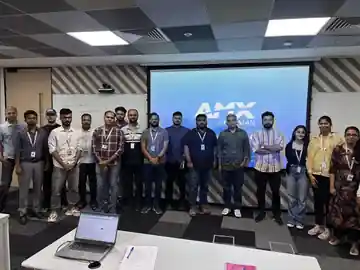

May – Jun 2026
HARMAN International · Product Development Intern
Worked with the Learning & Development team on an internal platform used by 500+ employees, collaborating across design, engineering and QA in agile sprints.
I contributed to feature development and built Python-based reporting and analytics workflows around course, test and certification data, reducing weekly preparation effort by about 40%.
